פשוט להצליח במתמטיקה › כל הנושאים › כיתה ז׳
מתמטיקה לכיתה ז׳ – סרטוני הסבר לפי נושא
כל סרטוני ההסבר במתמטיקה לכיתה ז׳ – 51 סרטונים לפי הנושאים בתוכנית הלימודים: מספרים מכוונים, אלגברה ופירוק לגורמים, משוואות, בעיות מילוליות ותנועה, יחס ופרופורציה, אחוזים, זוויות, שטחים והיקפים ועוד. מתאים לתרגול לקראת מבחנים ולחזרה על החומר.
- מספרים מכוונים
- אלגברה ופירוק לגורמים
- משוואות
- בעיות מילוליות ותנועה
- אחוזים
- זוויות
- שטחים והיקפים
- תרגול ושאלות בגרות מעורבות
רוצים לעקוב אחרי ההתקדמות?נרשמים בחינם, וכל סרטון שראיתם מסומן ✓. ממשיכים מכל מכשיר.
הצטרפות בחינם ←מספרים מכוונים (2) לכל הסרטונים בנושא ←


אלגברה ופירוק לגורמים (2) לכל הסרטונים בנושא ←

משוואות (4) לכל הסרטונים בנושא ←
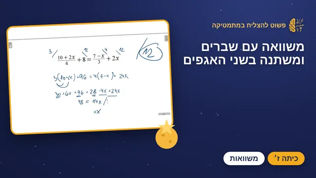
משוואה עם שברים ומשתנה בשני האגפים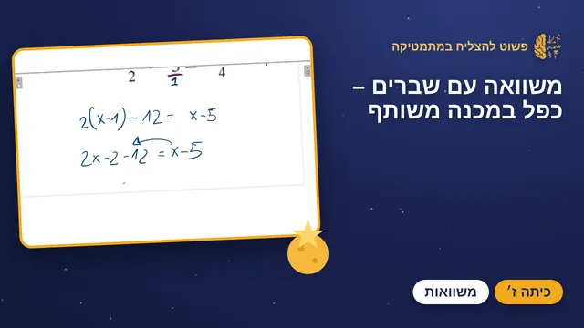
משוואה עם שברים – כפל במכנה משותף משוואה עם מכנים 7 ו 3 – פתרון שלב אחר שלבתרגיל לשחק עם משוואה – חוקי חשבון: אותה פעולה לכל האיברים
משוואה עם מכנים 7 ו 3 – פתרון שלב אחר שלבתרגיל לשחק עם משוואה – חוקי חשבון: אותה פעולה לכל האיבריםבעיות מילוליות ותנועה (5) לכל הסרטונים בנושא ←
 בעיית גילים – שגיא מבוגר מאיילה ב 5 שנים
בעיית גילים – שגיא מבוגר מאיילה ב 5 שנים בעיה מילולית עם שברים – מספר שהסכום של 5∕12 ו 1∕5 ממנו
בעיה מילולית עם שברים – מספר שהסכום של 5∕12 ו 1∕5 ממנו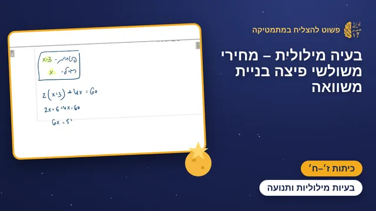
בעיה מילולית – מחירי משולשי פיצה בניית משוואה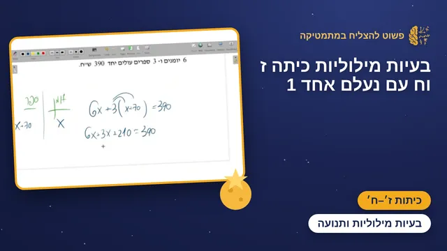
בעיות מילוליות כיתה ז וח עם נעלם אחד 1 בעיות מילוליות כיתה ז וח עם נעלם אחד 2
בעיות מילוליות כיתה ז וח עם נעלם אחד 2אחוזים (5) לכל הסרטונים בנושא ←
 אחוזים – משקל תפוז מקולף 20% קליפה
אחוזים – משקל תפוז מקולף 20% קליפה אחוזים – הנחה של 27% על 90 ש״ח
אחוזים – הנחה של 27% על 90 ש״ח מבוא לאחוזים – 100%, 10% ו 1%, הנחה והתייקרות
מבוא לאחוזים – 100%, 10% ו 1%, הנחה והתייקרות מבצעים בחנות – לומדים אחוזים · סרטון קצראחוזים · סרטון קצר
מבצעים בחנות – לומדים אחוזים · סרטון קצראחוזים · סרטון קצרזוויות (24) לכל הסרטונים בנושא ←
 תשובות לבוחן זוויות כיתה ז – חלק 4
תשובות לבוחן זוויות כיתה ז – חלק 4 תשובות לבוחן זוויות כיתה ז – חלק 3
תשובות לבוחן זוויות כיתה ז – חלק 3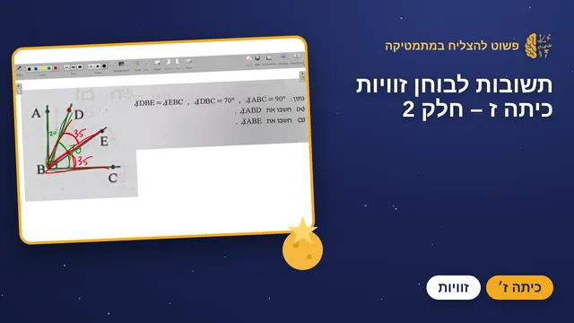
תשובות לבוחן זוויות כיתה ז – חלק 2 תשובות לבוחן זוויות כיתה ז – חלק 1
תשובות לבוחן זוויות כיתה ז – חלק 1 סימון זוויות בשלוש אותיות – חיבור זוויות
סימון זוויות בשלוש אותיות – חיבור זוויות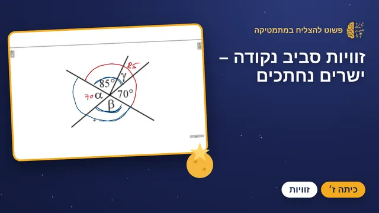
זוויות סביב נקודה – ישרים נחתכים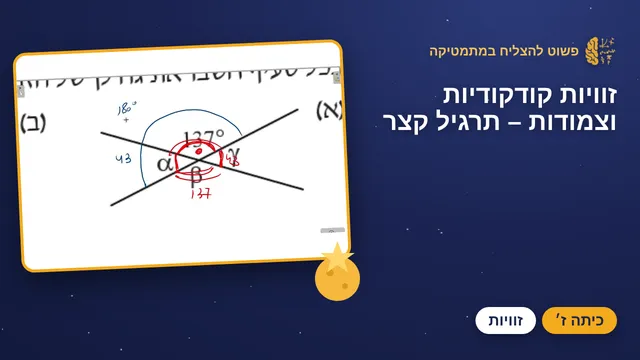
זוויות קודקודיות וצמודות – תרגיל קצר זוויות צמודות וזווית חיצונית במשולש
זוויות צמודות וזווית חיצונית במשולש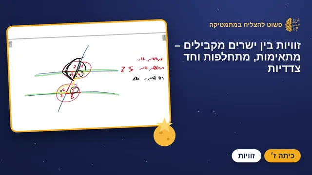
זוויות בין ישרים מקבילים – מתאימות, מתחלפות וחד צדדיות מבוא לזוויות – סימון זווית בשלוש אותיות
מבוא לזוויות – סימון זווית בשלוש אותיות מבוא לזוויות – ישרה, חדה, קהה, צמודות וקודקודיות
מבוא לזוויות – ישרה, חדה, קהה, צמודות וקודקודיות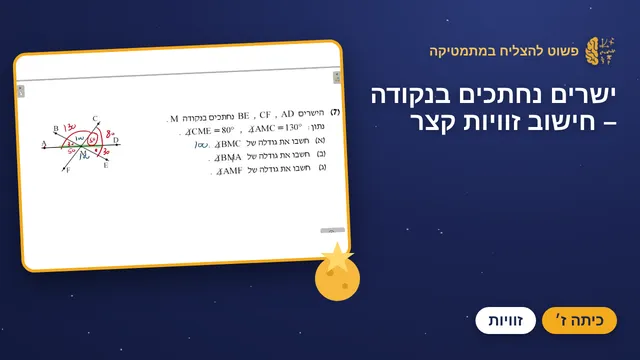
ישרים נחתכים בנקודה – חישוב זוויות קצר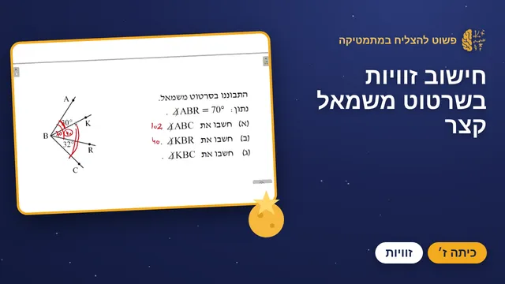
חישוב זוויות בשרטוט משמאל קצר חיסור זוויות – סימון בשלוש אותיות קצר
חיסור זוויות – סימון בשלוש אותיות קצר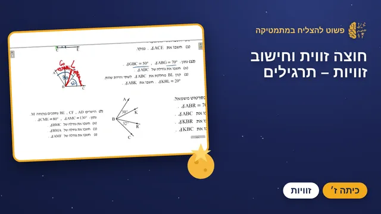
חוצה זווית וחישוב זוויות – תרגילים חישוב זוויות · סרטון קצר
חישוב זוויות · סרטון קצר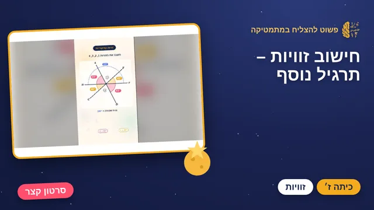
חישוב זוויות – תרגיל נוסף · סרטון קצר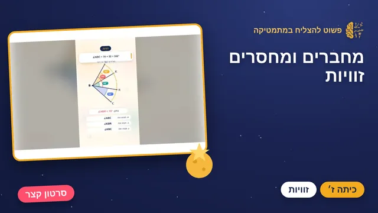
מחברים ומחסרים זוויות · סרטון קצר להגדיר זוויות · סרטון קצר
להגדיר זוויות · סרטון קצר זוויות על קו ישר · סרטון קצר
זוויות על קו ישר · סרטון קצר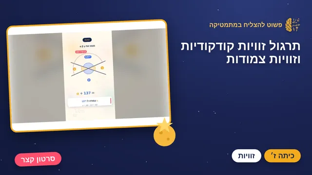
תרגול זוויות קודקודיות וזוויות צמודות · סרטון קצר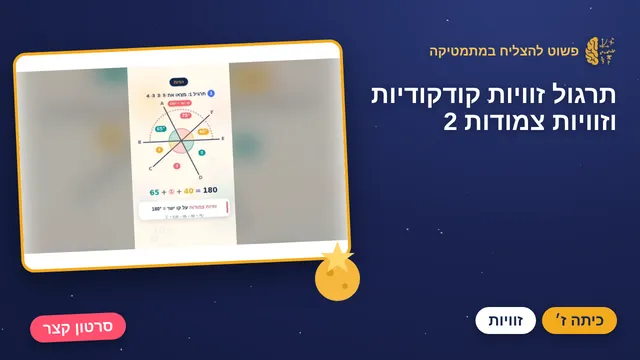
תרגול זוויות קודקודיות וזוויות צמודות 2 · סרטון קצר זוויות צמודות וזוויות קודקודיות – תרגילים נוספים · סרטון קצר
זוויות צמודות וזוויות קודקודיות – תרגילים נוספים · סרטון קצר סוגי זוויות · סרטון קצר
סוגי זוויות · סרטון קצרשטחים והיקפים (2) לכל הסרטונים בנושא ←
 צורות חופפות, טרנספורמציות ושטחים – שיקוף, חפיפה ושטח צורה מורכבת
צורות חופפות, טרנספורמציות ושטחים – שיקוף, חפיפה ושטח צורה מורכבת שטחים, היקפים וגופים במרחב – תיבה: פאות, שטח פנים ונפח
שטחים, היקפים וגופים במרחב – תיבה: פאות, שטח פנים ונפחתרגול ושאלות בגרות מעורבות (7) לכל הסרטונים בנושא ←
 השוואת מספרים עשרוניים ושברים (‹, =, ›)
השוואת מספרים עשרוניים ושברים (‹, =, ›)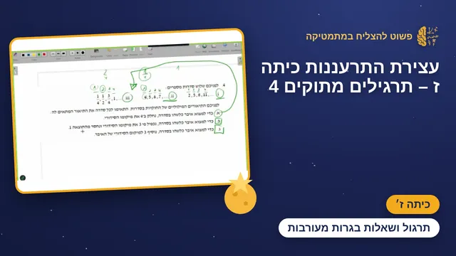
עצירת התרעננות כיתה ז – תרגילים מתוקים 4 עצירת התרעננות כיתה ז – תרגילים מתוקים 3
עצירת התרעננות כיתה ז – תרגילים מתוקים 3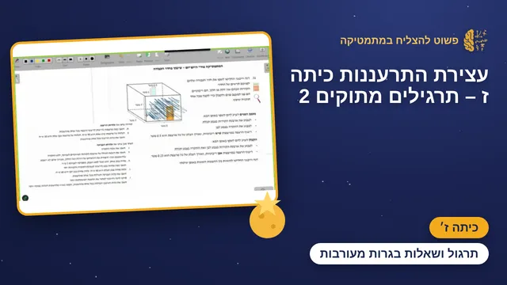
עצירת התרעננות כיתה ז – תרגילים מתוקים 2 עצירת התרעננות כיתה ז – תרגילים מתוקים 1
עצירת התרעננות כיתה ז – תרגילים מתוקים 1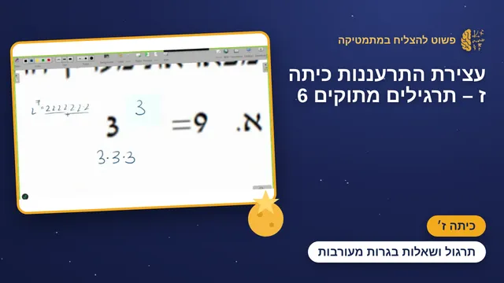
עצירת התרעננות כיתה ז – תרגילים מתוקים 6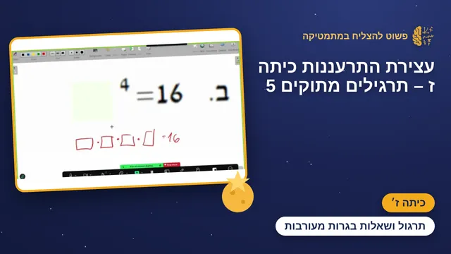
עצירת התרעננות כיתה ז – תרגילים מתוקים 5